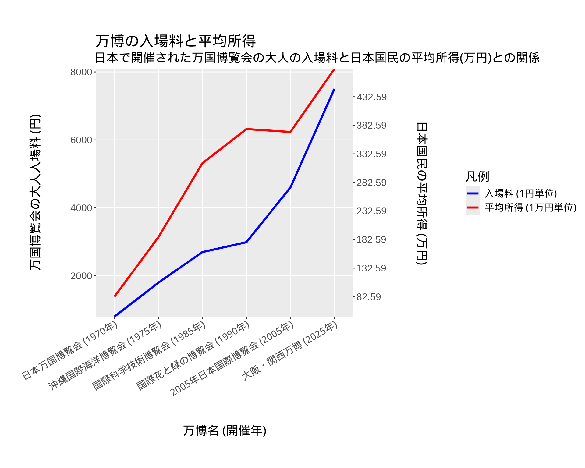
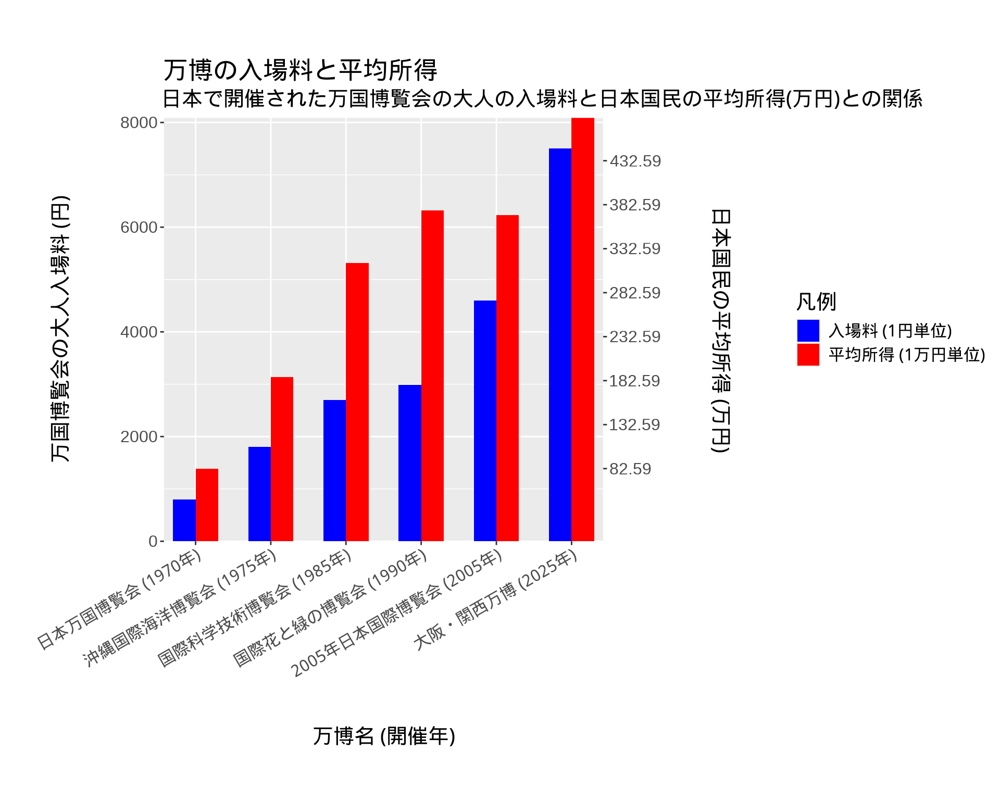

可視化結果の報告
(1) 日本で開催された”それぞれの”万国博覧会の入場料と日本国民の所得との関係
導入
日本では過去に5回万国博覧会が開催されており、現在進行形で6回目の万博が開催されている。 第1回目の万博が開催された1970年から現在まで半世紀以上の時間の幅が存在する。 その間、日本国民の所得にも同様の変化が見られると考えた。 各万国博覧会の入場料と所得の関係をそれぞれ比較したとき、 おおよそ同程度の差の割合になる様子を視覚的表現で可視化できるのではないかと考えた。
(2) 対象データ
各項目について
- name
- データの種類: N
- 意味: 各万国博覧会の正式名称
- western_year
- データの種類: T (データの構造では、\(T_1\)と表現することとする)
- 意味: 各万国博覧会の開催開始年 (西暦)
- era_year
- データの種類: T (データの構造では、\(T_2\)と表現することとする)
- 意味: 各万国博覧会の開催開始年 (和暦)
- entrance_fee
- データの種類: Q (データの構造では、\(Q_1\)と表現することとする)
- 意味: 各万国博覧会の大人の入場料
- give_mean
- データの種類: Q (データの構造では、\(Q_2\)と表現することとする)
- 意味: 各年の平均給与
データの構造について
\[ N \times T_1 \times T_2 \rightarrow Q_1 \times Q_2 \]
1変量質的 (名義) データと2変量時刻データの組をキーとする量的データの組
(3) 視覚的表現
(3-1) レポート課題1(A2)と同じもの
(3-2) レポート課題1(A2)とは異なるもの

(4) (3-2)に関する表現規則
- 対象データ
- 各万国博覧会の正式名称 \(N \times\) 各万国博覧会の開催開始年 (西暦) \(T_1 \rightarrow\) 各万国博覧会の大人の入場料 \(Q_1 \times\) 各年の平均給与 \(Q_2\)
- 基本規則
- 基本図形
- 項目 \(\Rightarrow\) 長方形 (棒)
- \(N \times T_1 \Rightarrow\) 位置 (横方向)
- \(Q_1 \times Q_2 \Rightarrow\) 長さ (高さ)
- 視覚変数
- 各万国博覧会の大人の入場料 \(Q_1\) と 各年の平均給与 \(Q_2\) の区別 \(\Rightarrow\) 長方形 (棒) の色
- 配置規則
- 各万国博覧会の正式名称 \(N \times\) 各万国博覧会の開催開始年 (西暦) \(T_1\) \(\Rightarrow\) 点の横方向の位置
- 各万国博覧会の大人の入場料 \(Q_1 \Rightarrow\) 長方形 (棒) の高さ (目盛りは、左側に従う)
- 各年の平均給与 \(Q_2 \Rightarrow\) 長方形 (棒) の高さ (目盛りは、右側に従う)
- 基本図形
- 作図規則
- 座標系
- \(x\) 軸に時刻データの軸を \(y\) 軸には互いのスケールを鑑みてスケールを調整した各年の各万国博覧会の大人の入場料と平均給与の軸を \(y_1\) 軸と \(y_2\) 軸として設定する
(5) (3-2)を持ちいて主張を説明する3段階の説明文
1. 基本規則を説明する
この図では、横方向に年数の古い順に万国博覧会の開催開始年と 各万国博覧会の名称を、縦方向の左側に各万国博覧会の大人の入場料の目盛りを 1円単位で2000円おきに刻み、右側に日本国民の平均所得の目盛りを1万円単位で 50万円おきに刻んでいる。 青色の長方形 (棒) が万国博覧会の大人の入場料を、 赤色の長方形 (棒) が日本国民の平均所得の変化を表している。
2. 見えるものをそのまま言葉で説明する
各万博の入場料と平均取得の差の割合を観測すると、 入場料が日本国民の平均所得を反映していない万博と 比較的反映している万博を確認することができる。 日本万国博覧会、大阪・関西万博は。比較的 入場料が日本国民の平均所得を反映していると見ることができる。 しかし、国際科学技術博覧会や国際花と緑の博覧会などでは、 入場料が日本国民の平均所得を反映していると主張するには無理がある。 これらは、青色の長方形と赤色の長方形の長さの差を見ると 確認することができる。
3. 主張を説明する
このように、各万国博覧会に注目して 大人の入場料と日本国民の平均所得の差の割合を観察すると、 全ての万博で日本国民の平均所得が大人の入場料に 反映されていないことがわかる。
(6) (3-2)の視覚的表現としての、(3-1)との違いについて意図や手法に関する考察
(3-2)の可視化表現で示したかったことは、 各万国博覧会に注目した場合と万国博覧会全体の変化に注目した場合で 可視化表現が観測者に強調する内容が変化するということである。
(3-1)で強調されることは、万国博覧会の入場料と日本国民の所得との関係に相関がある点である。 (3-2)で強調されることは、入場料が日本国民の平均所得を反映していない万博も複数観測される点である。 両者は、同じデータを参照しているにも関わらず相反する結果を可視化表現の観測者に提示する。
可視化表現はデータ中の示したい内容を効果的に示すことが可能であるが、 一方で可視化表現によって観測者に与えるデータの印象が大きく変わってしまうことが示せたのではないだろうか。
(7) (3-1)と(3-2)の視覚的表現あるいはそこで用いた可視化手法の利点と欠点に関する考察
(3-1)について
- メリット
- 時刻データの変化に共なって、 \(Q_1\) と \(Q_2\) がどのように変化するのかの全体の流れを見ることができる。
- デメリット
- 各万博の地点での\(Q_1\) と \(Q_2\) の値の差を見ることが難しい。
(3-2)について
- メリット
- 各万博の地点での\(Q_1\) と \(Q_2\) の値の差を容易に見ることができる。
- デメリット
- 時刻データの変化に共なった、 \(Q_1\) と \(Q_2\) がどのように変化するのかの全体の流れを見ることができる。
(8A) (3-2)の制作に生成AIを利用していない場合
(8A-1) 可視化を行うにあたり行なったデータの加工方法
データの加工及び可視化表現をR言語で記述したプログラムで行った。
以下がそのソースコードである。
library(ggplot2)
suppressMessages({
library(tidyverse)
library(showtext)
# フォントの読み込み
showtext::showtext_auto()
})
# データを読み込む
expo_data <- read.csv("./data/data.csv")
# 西暦順にラベルを並べる
label <- paste0(
expo_data$name[order(expo_data$western_year)],
" (",
expo_data$western_year[order(expo_data$western_year)],
"年)"
)
expo_data$label <- factor(
label,
levels = label,
ordered = TRUE
)
# 平均年収のスケールを調整する
expo_data$give_mean_10k <- expo_data$give_mean / 10000
# 平均年収と入場料のスケールを合わせる
entrance_fee_min <- min(expo_data$entrance_fee)
entrance_fee_max <- max(expo_data$entrance_fee)
give_mean_min <- min(expo_data$give_mean_10k)
give_mean_max <- max(expo_data$give_mean_10k)
scaler <- (entrance_fee_max - entrance_fee_min) /
(give_mean_max - give_mean_min)
expo_data$scaled_income <- expo_data$give_mean_10k * scaler
# 縦長のdata.frameに変換
expo_data <- expo_data %>%
select(label, entrance_fee, scaled_income) %>%
pivot_longer(
cols = c("entrance_fee", "scaled_income"),
names_to = "type",
values_to = "value"
) %>%
mutate(
type = recode(
type,
"entrance_fee" = "入場料 (1円単位)",
"scaled_income" = "平均所得 (1万円単位)"
)
)
# グラフの作成
ggplot(data = expo_data, aes(x = label, y = value, fill = type)) +
geom_col(position = "dodge", width = 0.6) +
scale_y_continuous(
expand = c(0, 0),
sec.axis = sec_axis(
transform = ~ . / scaler,
breaks = seq(from = give_mean_min, to = give_mean_max, by = 50),
name = "\n日本国民の平均所得 (万円)\n"
)
) +
scale_x_discrete(expand = c(0.07, 0.07)) +
scale_fill_manual(
name = "凡例",
values = c("入場料 (1円単位)" = "blue", "平均所得 (1万円単位)" = "red")
) +
labs(
x = "\n万博名 (開催年)\n",
y = "\n万国博覧会の大人入場料 (円) \n",
title = "\n万博の入場料と平均所得",
subtitle = "日本で開催された万国博覧会の大人の入場料と日本国民の平均所得(万円)との関係"
) +
theme(
# 基本フォントサイズ
text = element_text(size = 30),
# X軸ラベルの回転
axis.text.x = element_text(angle = 30, hjust = 1)
)また、以下の手順で環境の再現を行なうことができる。
- 当レポジトリをclone
git clone https://github.com/Myxogastria0808/information_visualization_homework2- devShellを利用した環境に入る
当レポジトリのルートのディレクトリで、以下のコマンドを実行する。
以下のコマンドを実行するためには、Nixと Nix flakesが必要です。 Nixと Nix flakesについては、LinuxユーザとMacOSユーザで利用できるはずです。
nix develop- Quarto Websitesのプレビューを見る
以下のコマンドを実行すると、ブラウザにビルド結果が表示されるはずである。
quarto preview src環境の再現性について
Nixを採用したことにより、再現性の高い開発環境を構築することができた。
情報可視化において、可視化表現の結果が常に再現可能である状態を維持することは 非常に重要なことだろう。 今後、情報可視化の分野においてもNixの利用が広まることを期待している。
flake.nix
以下のflake.nixが、このレポジトリの開発環境を構築するためのNix言語の記述になる。
{
description = "information_visualization_homework1";
inputs = {
nixpkgs.url = "github:NixOS/nixpkgs/nixos-25.05";
flake-utils.url = "github:numtide/flake-utils";
};
outputs =
inputs:
inputs.flake-utils.lib.eachDefaultSystem (
system:
let
pkgs = inputs.nixpkgs.legacyPackages.${system};
rpkgs = with inputs.nixpkgs.legacyPackages.${system}.rPackages; [
DT
ggplot2
tidyverse
showtext
];
in
{
devShells.default = pkgs.mkShell {
packages =
with pkgs;
[
R
quarto
noto-fonts-cjk-serif
]
++ rpkgs;
};
}
);
}
(8A-2) 可視化に利用したツール
- プログラム言語
- R言語
- コードフォーマッタ
- 使用したR言語のpackage
- DT
- ggplot2
- tidyverse
- showtext
- 環境の再現
- Nix (Nix flakes)
- レポートのサイトの生成
- GitHub Pagesヘのデプロイ
- GitHub Actions \(\times\) Nix
ソースコード等は、以下のレポジトリに公開しています。
https://github.com/Myxogastria0808/information_visualization_homework2
出典
https://otokupick.com/1388/?utm_source=chatgpt.com/ (2025/6/3)
https://www.expo2025.or.jp/association/ (2025/6/5)
https://www.expo2025.or.jp/tickets-index/price/ (2025/6/5)
https://www.nta.go.jp/publication/statistics/kokuzeicho/jikeiretsu/01_02.htm (2025/6/5)
https://career-research.mynavi.jp/reserch/20250214_92405/ (2025/6/5)
https://blog.statsbeginner.net/entry/2020/08/11/212405 (2025/6/5)